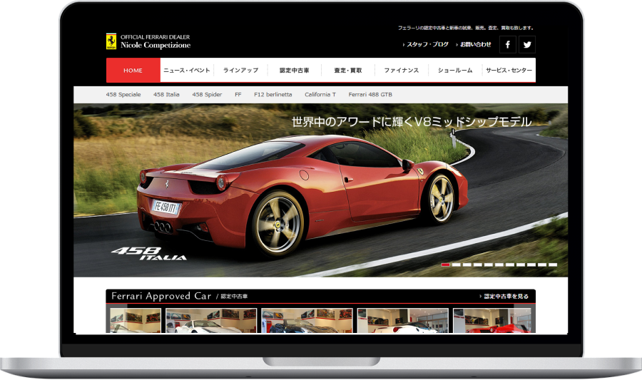
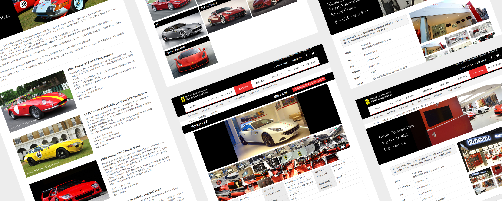
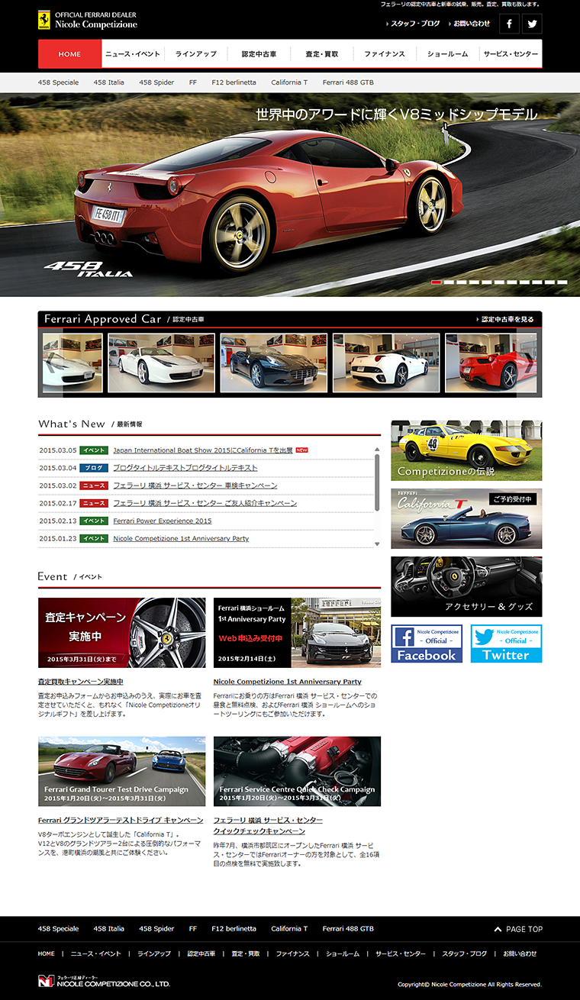

WORKS
つくったもの
フェラーリ正規ディーラー
Nicole Competizione
WEB
- 担当業務
-
ディレクター
デザイナー
フロントエンドエンジニア
- 制作期間
-
ディレクション : 2週間
ワイヤーフレーム : 2週間
デザイン : 2ヶ月
コーディング：3ヶ月 - 予算規模
- 100万円
- 使用ツール
- Photoshop / Dreamweaver
- 使用言語
- HTML / CSS / JavaScript / jQuery
※本リンクはリニューアル後のサイトです

フェラーリ正規ディーラーWEBサイト制作プロジェクト
高級車ブランドであるフェラーリの正規ディーラーのサイト制作において、ディレクションからデザイン、フロントエンド実装まで一貫して担当。
ブランドの世界観を損なわないことを最優先に、洗練されたビジュアル設計と高級感のあるUIデザインを構築しました。視覚的なインパクトと情報の見やすさを両立させ、ユーザーに直感的で快適な閲覧体験を提供しています。
サイト構造は、車種情報・店舗情報・お問い合わせなどへの導線を整理し、ユーザーが求める情報へスムーズにアクセスできるよう最適化。特にファーストビューや導線設計に注力し、ブランド体験とユーザビリティの両立を実現しました。
アニメーションやインタラクションを適切に取り入れることで、ブランド価値を高めるリッチな表現を実現しています。
制作は、ディレクション（2週間）、ワイヤーフレーム（2週間）、デザイン（2ヶ月）、コーディング（3ヶ月）の工程で進行。Adobe PhotoshopおよびAdobe Dreamweaverを使用し、HTML / CSS / JavaScript / jQueryによる実装を行いました。

ABOUT
概要
- クライアント
-
Nicole Competizione合同会社
- 課題
-
- 高級ブランドであるフェラーリの世界観を損なわずに、WEB上で魅力を最大限に伝える必要があった
- 車両情報や店舗情報など、多岐にわたるコンテンツを整理し、直感的に理解できる構造設計が求められた
- ブランドイメージとユーザビリティを両立するUI/UX設計が課題
- 目的
-
- ブランド価値を体現したWEBサイトの構築
- 来店予約や問い合わせなどのコンバージョン向上
- 高価格帯商品にふさわしい信頼性・安心感の提供
- 取り組み
-
- ディレクターとして情報設計・構成設計を主導し、ユーザー導線を最適化
- ワイヤーフレーム段階からUI/UXを意識した設計を実施
- デザイナーとしてブランドトーンに沿った高級感あるビジュアルを設計
- フロントエンドではアニメーションやインタラクションを取り入れ、没入感を演出
- HTML / CSS / JavaScript / jQueryを用いてパフォーマンスと表現力を両立
- 成果・実績
-
- ブランドイメージを損なわない高品質なWEBサイトを実現
- 視認性と操作性を両立したUIにより、ユーザー体験を向上
- ディレクション〜実装まで一貫対応することで、品質とスピードの両立を達成
- ターゲット
-
高級車に関心のある富裕層や経営者層、ブランド価値を重視する自動車愛好家を主なターゲットとし、上質な体験を求めるユーザーに向けた設計としました。
- クライアントの要望
-
正規ディーラーとしての信頼性を担保しつつ、ブランドの持つラグジュアリーな世界観を忠実に再現すること。また、来店予約や問い合わせにつながる導線設計を強化したいという要望がありました。
CONCEPT
コンセプト
- デザインイメージ
-
高級感と洗練された印象を軸に、無駄を削ぎ落としたミニマルな構成で視線誘導を設計。大胆なビジュアルと余白を活かし、ブランドの存在感を際立たせました。
- コンセプト
-
「ブランド体験をWEBで再現する」ことを軸に、訪問ユーザーが実店舗に足を運びたくなるような没入感と期待感を醸成するデザインを追求しました。
- カラー
-
ブランドカラーであるレッドをアクセントに、ブラックやダークトーンを基調とした配色で統一。コントラストを活かすことで高級感と視認性を両立させました。
